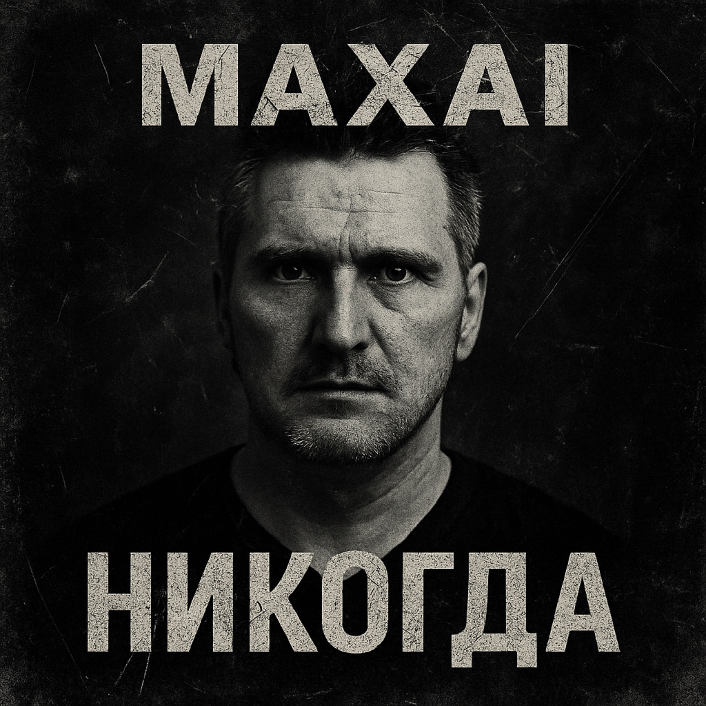

31.07.2025
Если рак просвистит на горе,
Если град застучит в январе,
Тогда брошу свои якоря
В бухте милых людей и добра.
От природы я весел и мил,
Никогда алкоголя не пил,
Но крутой и задиристый нрав
Не даёт всем сказать, что неправ.
Может, надо добрее мне стать?
Может, хватит везде всех ругать?
Улыбнуться и просто вздохнуть.
Может, это мой истинный путь?
От природы я весел и мил,
Никогда алкоголя не пил,
Но крутой и задиристый нрав
Не даёт всем сказать, что неправ.
Но вокруг столько зла и упрямства,
Воспитанье сменилось на хамство,
И стремление моё к доброте,
Как и якорь, лежит пусть на дне.
И пускай идёт дождик в четверг,
И пускай летом выпадет снег,
Своенравный характер во мне
Путь проложит всегда и везде.
От природы я весел и мил,
Никогда алкоголя не пил,
Но крутой и задиристый нрав
Не даёт всем сказать, что неправ.
Но вокруг столько зла и упрямства,
Воспитанье сменилось на хамство,
И стремление моё к доброте,
Как и якорь, лежит пусть на дне.
До прослушивания: Лёгкая ирония, уверенность, самоирония.
После прослушивания: Примирение с собой, принятие своей природы, улыбка над несовершенством.
Трек «Никогда» — это ироничный портрет человека, который идёт своим путём, не поддаваясь внешним условностям. Здесь высмеивается стремление к всеобщему одобрению и подчёркивается важность оставаться собой, несмотря ни на что.
Чередование куплетов с коротким повторяющимся припевом. Много бытовых образов, лёгкий юмор, простой язык — всё для создания узнаваемого героя и ощущения жизненного ритма.
Голос — мужской, открытый, слегка хулиганский, но с иронией и теплом. Это человек, который не стесняется своих недостатков и не стремится казаться лучше — он настоящий, без фальши.